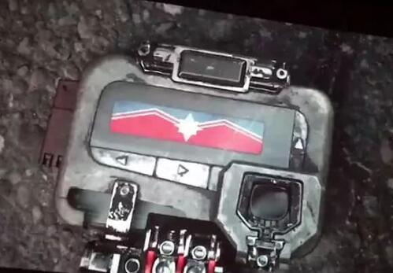
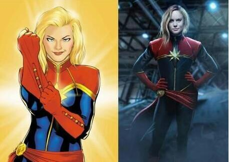

作为一名合格的漫威粉，除了做到"此生无悔入漫威"外，还应该有一些基础的漫威漫画的了解。而今天要讲的「复仇者联盟3」，相信很多人跟我一样 在三年前的复联2彩蛋后，一直都在心中激动的等待着3的上映，终于在2018年5月13日，我看了，这部让我激动并且感动的电影，让我看完到最后彩蛋 后仍久久不想离去，很多人对于结局都深表疑惑。对有疑惑的那群人，我给个建议去观看下 《无限手套》这部漫画的视频。 虽然我可以很肯定的说，复联4一定不会是漫画的复制，但电影中的结尾灭霸在自己的茅草屋中坐着的情景在漫画中就出现，这部漫画可以给你一个很好的 安慰。
下面开始我对该电影的感受与一些小解读：
1、钢铁侠与奇异博士等人在泰坦星上等待灭霸到来时间中，奇异做了一件事就是利用时间宝石，观看了未来灭霸的方法中，只有1640万分之一的 几率可以打赢。并且在奇异早期对钢铁侠说的话中也说过："在蜘蛛侠与钢铁侠与宝石三者中，毫无疑问会放弃前二者"。所以我觉得奇异一定是看 到星爵的失控导致战术失败，而且最后奇异回答钢铁侠话中所说，「你死了并不是最好的结果」。所以我觉得这是战术的一部分。
2、彩蛋：彩蛋中局长两次出现，大家都会问最后局长是发送给谁？？？据我了解，2019年3月北美会上映漫威第21部电影《惊奇队长》，而我们
看看彩蛋中的细节

再看看惊奇队长的造型：

说到这我也有点兴奋了，根据我对漫画的了解，击退过灭霸的人物有：
3、众英雄的消失只是暂时，根据漫画，是星云抢过无限手套至于怎样抢的请点击上面的链接了解，然后把响指前的生命都恢复了。第4部是怎样 我不清楚，我感觉套路应该是与另一部漫画中的情节一样，灭霸在完成这一重大举动后，心感空虚或者一些事件让他使用无限手套把一切都还原。 这只是我的想法，毕竟还有黑豹2要上映的。
感受：整部电影从头到尾可以说是无尿点，对于灭霸这个反派，漫威打造了一个漫威电影宇宙史上最伟大的反派，拥有极强的实力，霸气的 外表造型。在他的立场上，做法似乎并没有什么不对，为了保持宇宙的能量不被耗尽，也因为曾经的做法使得爱女对他恨之入骨，才决定寻 找无限宝石，使用无限手套带来的能力，让半数生命可以无痛苦的消失。在灵魂宝石所在的星球上，这一幕也很成功的演绎出灭霸并不是一 个嗜血，冷血的恶魔，一个很成功的反派塑造。电影中笑点，泪点同在。让我最感到不想看到的画面是洛基被灭霸掐死的画面和幻视的下场。 幻视可以说是整部电影的头号悲剧人物，实力被削弱了，还从头被捅到尾的。令我看得感动+热血的画面在美队带着寡姐和猎鹰去救幻视和我 老婆的画面，这一刻的美队是我觉得最强的一刻；还有一个就是雷神的降临，这一面无法用言语描述，第一次感觉托尔是的强，最终还是变为 斧子之神。。电影真的很精彩，准备二刷三刷了。
〔完〕